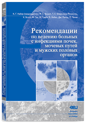

Рекомендации по ведению больных с инфекциями почек,
мочевых путей и мужских половых органов

Глубокоуважаемые коллеги!
Российское общество урологов, ФГУ «НИИ урологии Росмедтехнологий» и Межрегиональная ассоциация по клинической микробиологии и антимикробной химиотерапии (МАКМАХ) предлагают Вашему вниманию перевод Рекомендаций Европейской урологической ассоциации (EAU). Основная цель Рекомендаций заключается не в жёстком и однозначном указании методов лечения и диагностики, а в предоставлении доступных современных консенсусных точек зрения на наиболее приемлемые методы ведения пациентов с урологической инфекцией. Члены Комитета по инфекциям в урологии EAU провели анализ большого числа литературных обзоров и публикаций, которые были отобраны на основе научной достоверности.
Клинические рекомендации Европейской урологической ассоциации (EAU) впервые были опубликованы в 2001 году.
Рекомендации EAU 2006-2007 гг. содержат доказательную информацию, учитывающую результаты современных исследований по проблемам диагностики и лечения ИМП, новые мета-анализы, а также накопленный клинический опыт.
Необходимость перевода на русский язык новых Рекомендаций EAU (2006-2007 гг.) по ведению больных с инфекционно-воспалительными заболеваниями почек, мочевых путей и мужских половых органов, в первую очередь, обусловлена недостаточным знанием английского языка основной массой практических врачей.
Рекомендации EAU составлены по принципам «медицины, основанной на доказательствах». В новой редакции Рекомендаций EAU использовались данные мета-анализов, размещённых в базе данных Pubmed, упоминаемые исследования классифицированы в соответствии с уровнями доказательности данных.
Также хотим обратить внимание читателей на некоторые изменения в новой редакции Рекомендаций, например, в отношении диагностической значимости бактериурии при различных категориях ИМП.
Однако, следует отметить, что данные Рекомендации не являются универсальными, поскольку в них не учитываются особенности резистентности уропатогенов в той или иной стране/регионе. Так, в нескольких российских исследованиях, инициированных Научно-методическим центром по мониторингу антибиотикорезистентности Федерального Агентства по Здравоохранению и Социальному развитию и поддержанных Российским обществом урологов и ФГУ НИИ урологии, было показано, что уровень резистентности кишечной палочки — основного возбудителя внебольничных инфекций мочевых путей у различных категорий пациентов (взрослых, детей, беременных женщин), к триметоприму, котримоксазолу, аминопенициллинам (ампициллину, амоксициллину) в большинстве регионов страны, включая Москву, превышает пороговый уровень 20%, в связи с чем эти препараты не могут быть рекомендованы для эмпирической терапии ИМП в России.
Наиболее in vitro активными в России препаратами в отношении штаммов кишечной палочки, выделенных при различных формах внебольничных неосложнённых ИМП у взрослых являются цефалоспорины II-III поколения, фосфомицин, нитрофурантоин (резистентность 0%), ингибиторозащищённые пенициллины (резистентность 0,8%) и фторхинолоны (резистентность 4,8%). В то же время, при внебольничных осложнённых ИМП резистентность к цефалоспоринам II-IV поколения составляет около 4% (цефуроксим — 3,2%; цефотаксим — 2,3%; цефтибутен — 0,9%; цефепим — 1,4%; цефоперазон/сульбактам — 0%); к ингибиторозащищённым пенициллинам — 3,2%; к карбапенемам — 0%; к аминогликозидам — 0,5-10% (гентамицин — 10%; нетилмицин — 1,8% и амикацин — 0,5%); к нитрофурантоину — 1,8%; к нефторированным хинолонам — 20%; к фторхинолонам — 15-17%.
У детей с различными формами внебольничных ИМП в отношении кишечной палочки наиболее in vitro активными препаратами в России являются ингибиторозащищённые пенициллины (резистентность 3,9%), цефалоспорины II-IV поколения (резистентность 0-3,9%), аминогликозиды (резистентность 0-9,7%), нитрофурантоин (резистентность 2,1%) и фосфомицин (резистентность 0%).
У беременных женщин с острым циститом и бессимптомной бактериурией высокую активность в отношении кишечной палочки сохраняет фосфомицин (резистентность 0%), цефалоспорины II-III поколения (резистентность 1,7-3,4%) и амоксициллин/клавуланат.
Для лечения нозокомиальных ИМП, которые, как правило, вызываются полирезистентными микроорганизмами, включая штаммы, продуцирующие бета-лактамазы расширенного действия (БЛРС), трудно дать какие-либо конкретные рекомендации, поскольку внутрибольничные уропатогены чаще подвержены селективному давлению антибиотиков, а влияние этого фактора может варьировать в различных географических регионах и отделениях разного профиля. Так, по данным российского исследования РЕЗОРТ (2003-2005 гг.), в отделениях реанимации и интенсивной терапии ведущим возбудителем нозокомиальных ИМП являлась P. aeruginosa (30,8%), а среди штаммов E. coli (25,8%) и K. pneumoniae (11,1%) частота продукции БЛРС составила 45% и 70,4%, соответственно. В отношении упомянутых штаммов наиболее высокой активностью обладают карбапенемы. Особенно тревожной является ситуация с резистентностью P. aeruginosa, поскольку большинство штаммов, выделенных при нозокомиальных ИМП, устойчивы ко всем клинически доступным антимикробным препаратам, за исключением полимиксина.
В отношении резистентности возбудителей инфекций, передающихся половым путём, в Российской Федерации также имеются определённые особенности. Так, в рамках программы мониторинга за резистентностью гонококков в России отмечается крайне высокий уровень резистентности данного возбудителя к пенициллину и тетрациклинам (более 70%), а также фторхинолонам (более 50%); растёт устойчивость к спектиномицину (7,9%). Причём, на этом фоне колебания в частоте распространения устойчивости между отдельными географическими регионами в 10–20% не имеют существенного значения, так как для эмпирической терапии ИППП пороговый уровень резистентности возбудителя не должен превышать 5%. В настоящее время высокую антигонококковую активность сохраняют только цефалоспорины III поколения, в частности, цефтриаксон, к которому резистентных штаммов выделено не было.
Дифференцированно нужно относиться также и к перечню лекарственных препаратов, рекомендованных в Руководстве для терапии разных категорий ИМП, поскольку некоторые из них в России на настоящий момент не применяются. Это касается ряда пенициллинов (пропициллин, азидоциллин, клоксациллин, диклоксациллин, флуклоксациллин, бакампициллин, пиперациллин/сульбактам); цефалоспоринов (лоракарбеф, цефетамет пивоксил, цефотиам), фторхинолонов (эноксацин, флероксацин, гатифлоксацин), комбинаций антифолатов (котетроксоприм, триметоприм/сульфаметрол).
Следует обратить внимание также на то, что нитрофурантоин, рекомендованный для терапии инфекций только нижних отделов мочевых путей, доступен в России только в микрокристаллическом виде, тогда как все клинические исследования проводились с его макрокристаллической формой.
Мы искренне надеемся, что Рекомендации Европейской Урологической Ассоциации по ведению пациентов с инфекциями почек, мочевых путей и мужской половой сферы будут востребованы не только врачами-урологами, но и будут полезны врачам других специальностей.
| | Председатель Российского общества урологов
Академик РАМН, профессор, д.м.н.
Н.А. Лопаткин
Директор ФГУ «НИИ урологии Росмедтехнологий», профессор, д.м.н.
О.И. Аполихин
Директор НИИ антимикробной химиотерапии ГОУ ВПО «Смоленская государственная медицинская академия Росздрава», Президент Межрегиональной ассоциации по клинической микробиологии и антимикробной химиотерапии, профессор, д.м.н.
Р.С. Козлов
Председатель Проблемной комиссии по воспалительным заболеваниям Научного совета по «Уронефрологии» РАМН и МЗ СР РФ, зав. отделом ФГУ НИИ урологии Росмедтехнологий, д.м.н.
Т.С. Перепанова |
Скачать Рекомендации:
 Рекомендации по ведению больных с инфекциями почек, мочевых путей и мужских половых органов (формат PDF, 1,13 Mб)
Рекомендации по ведению больных с инфекциями почек, мочевых путей и мужских половых органов (формат PDF, 1,13 Mб)


")